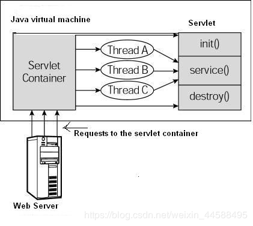

<!DOCTYPE html>
<html>
<head><meta name="generator" content="Hexo 3.9.0">
  <meta charset="utf-8">
  
  <!-- JavaWeb基础知识之Servlet | Zesystem&#39;blog -->
  <title>Zesystem's  Space</title>
  <meta name="viewport" content="width=device-width, initial-scale=1, maximum-scale=1">
  <meta name="keywords" content="This is Zesystem's blog.">
  <!-- 
  
    <meta name="keywords" content="MinHow,MinHow's Blog" />
    -->
  <meta name="description" content="1、所需要的环境 jdk、tomcat、mysql(最好有) 2、生命周期Servlet 生命周期可被定义为从创建直到毁灭的整个过程。以下是 Servlet 遵循的过程： Servlet 通过调用 init () 方法进行初始化。这里只在第一次请求servlet时创建。  Servlet 调用 service() 方法来处理客户端的请求。这里有类似于doGet和doPost方法。  Servlet">
<meta name="keywords" content="servlet,cookie,session">
<meta property="og:type" content="article">
<meta property="og:title" content="JavaWeb基础知识之Servlet">
<meta property="og:url" content="https://zesystem.github.io/2019/08/17/JavaWeb基础知识之Servlet/index.html">
<meta property="og:site_name" content="Zesystem&#39;blog">
<meta property="og:description" content="1、所需要的环境 jdk、tomcat、mysql(最好有) 2、生命周期Servlet 生命周期可被定义为从创建直到毁灭的整个过程。以下是 Servlet 遵循的过程： Servlet 通过调用 init () 方法进行初始化。这里只在第一次请求servlet时创建。  Servlet 调用 service() 方法来处理客户端的请求。这里有类似于doGet和doPost方法。  Servlet">
<meta property="og:locale" content="default">
<meta property="og:image" content="https://zesystem.github.io/2019/08/17/JavaWeb基础知识之Servlet/20190817223651727.png">
<meta property="og:updated_time" content="2019-08-17T15:36:30.635Z">
<meta name="twitter:card" content="summary">
<meta name="twitter:title" content="JavaWeb基础知识之Servlet">
<meta name="twitter:description" content="1、所需要的环境 jdk、tomcat、mysql(最好有) 2、生命周期Servlet 生命周期可被定义为从创建直到毁灭的整个过程。以下是 Servlet 遵循的过程： Servlet 通过调用 init () 方法进行初始化。这里只在第一次请求servlet时创建。  Servlet 调用 service() 方法来处理客户端的请求。这里有类似于doGet和doPost方法。  Servlet">
<meta name="twitter:image" content="https://zesystem.github.io/2019/08/17/JavaWeb基础知识之Servlet/20190817223651727.png">
  
  
    <link rel="icon" href="/favicon.ico">
  
  <link href="//cdn.bootcss.com/font-awesome/4.7.0/css/font-awesome.min.css" rel="stylesheet" type="text/css">
  <link rel="stylesheet" href="/css/style.css">
  <script src="/js/pace.min.js"></script>
  

  
	<script>
	var _hmt = _hmt || [];
	(function() {
	  var hm = document.createElement("script");
	  hm.src = "//hm.baidu.com/hm.js?true";
	  var s = document.getElementsByTagName("script")[0]; 
	  s.parentNode.insertBefore(hm, s);
	})();
	</script>

  
  <div style="display: none;">
    <script src="//s22.cnzz.com/z_stat.php?id=true&web_id=true" language="JavaScript"></script>
  </div>


</head>
</html>
<body>
  <div id="container">
      <header id="header">
    <div id="banner"></div>
    <div id="header-outer">
        <div id="header-menu" class="header-menu-pos animated">
            <div class="header-menu-container">
                <a href="/" class="left">
                    <span class="site-title">Zesystem</span>
                </a>
                <nav id="header-menu-nav" class="right">
                    
                    <a  href="/">
                        <i class="fa fa-home"></i>
                        <span>我的家</span>
                    </a>
                    
                    <a  href="/archives">
                        <i class="fa fa-archive"></i>
                        <span>干货s</span>
                    </a>
                    
                    <a  href="/about">
                        <i class="fa fa-user"></i>
                        <span>关于me</span>
                    </a>
                    
                </nav>
                <a class="mobile-header-menu-button">
                    <i class="fa fa-bars"></i>
                </a>
            </div>
        </div>
        <div id="header-row">
            <div id="logo">
                <a href="/">
                    
                </a>
            </div>
            <div class="header-info">
                <div id="header-title">
                    
                    <h2>
                        Zesystem
                    </h2>
                    
                </div>
                <div id="header-description">
                    
                    <h3>
                        不平凡的人生需要走不平凡的路
                    </h3>
                    
                </div>
            </div>
            <nav class="header-nav">
                <div class="social">
                    
                        <a title="CSDN" target="_blank" href="https://blog.csdn.net/weixin_44588495">
                            <i class="fa fa-home fa-2x"></i></a>
                    
                        <a title="Github" target="_blank" href="https://github.com/Zesystem">
                            <i class="fa fa-github fa-2x"></i></a>
                    
                        <a title="2502266520"  ">
                            <i class="fa fa-qq fa-2x"></i></a>
                    
                </div>
            </nav>
        </div>
    </div>
</header>
      <div class="outer">
        <section id="main" class="body-wrap"><article id="post-JavaWeb基础知识之Servlet" class="article article-type-post" itemscope itemprop="blogPost">
  <div class="article-inner">
    
      <header class="article-header">
        
  
    <h1 class="post-title" itemprop="name">
      JavaWeb基础知识之Servlet
    </h1>
    <div class="post-title-bar">
      <ul>
          
              <li>
                  <i class="fa fa-book"></i>
                  
                      <a href="/categories/JavaWeb/">JavaWeb</a>
                  
              </li>
          
        <li>
          <i class="fa fa-calendar"></i>  2019-08-17
        </li>
        <li>
          <i class="fa fa-eye"></i>
          <span id="busuanzi_value_page_pv"></span>
        </li>
      </ul>
    </div>
  

          
      </header>
    
    <div class="article-entry post-content" itemprop="articleBody">
      
            
            <h4 id="1、所需要的环境"><a href="#1、所需要的环境" class="headerlink" title="1、所需要的环境"></a>1、所需要的环境</h4><ul>
<li><p>jdk、tomcat、mysql(最好有)</p>
<h4 id="2、生命周期"><a href="#2、生命周期" class="headerlink" title="2、生命周期"></a>2、生命周期</h4><h5 id="Servlet-生命周期可被定义为从创建直到毁灭的整个过程。以下是-Servlet-遵循的过程："><a href="#Servlet-生命周期可被定义为从创建直到毁灭的整个过程。以下是-Servlet-遵循的过程：" class="headerlink" title="Servlet 生命周期可被定义为从创建直到毁灭的整个过程。以下是 Servlet 遵循的过程："></a>Servlet 生命周期可被定义为从创建直到毁灭的整个过程。以下是 Servlet 遵循的过程：</h5></li>
<li><p>Servlet 通过调用 init () 方法进行初始化。这里只在第一次请求servlet时创建。</p>
</li>
<li><p>Servlet 调用 service() 方法来处理客户端的请求。这里有类似于doGet和doPost方法。</p>
</li>
<li><p>Servlet 通过调用 destroy() 方法终止（结束）。在 Servlet 生命周期结束时被调用。</p>
</li>
<li><p>最后，Servlet 是由 JVM 的垃圾回收器进行垃圾回收的。<br></p>
<h4 id="3、-代码示例"><a href="#3、-代码示例" class="headerlink" title="3、 代码示例"></a>3、 代码示例</h4></li>
<li><p>这是再eclipse创建的servlet</p>
<figure class="highlight java"><table><tr><td class="gutter"><pre><span class="line">1</span><br><span class="line">2</span><br><span class="line">3</span><br><span class="line">4</span><br><span class="line">5</span><br><span class="line">6</span><br><span class="line">7</span><br><span class="line">8</span><br><span class="line">9</span><br><span class="line">10</span><br><span class="line">11</span><br><span class="line">12</span><br><span class="line">13</span><br><span class="line">14</span><br><span class="line">15</span><br><span class="line">16</span><br><span class="line">17</span><br><span class="line">18</span><br><span class="line">19</span><br><span class="line">20</span><br><span class="line">21</span><br><span class="line">22</span><br><span class="line">23</span><br><span class="line">24</span><br><span class="line">25</span><br><span class="line">26</span><br><span class="line">27</span><br><span class="line">28</span><br><span class="line">29</span><br><span class="line">30</span><br><span class="line">31</span><br><span class="line">32</span><br><span class="line">33</span><br><span class="line">34</span><br><span class="line">35</span><br><span class="line">36</span><br><span class="line">37</span><br><span class="line">38</span><br><span class="line">39</span><br><span class="line">40</span><br><span class="line">41</span><br></pre></td><td class="code"><pre><span class="line"></span><br><span class="line"></span><br><span class="line"><span class="keyword">import</span> java.io.IOException;</span><br><span class="line"><span class="keyword">import</span> javax.servlet.ServletException;</span><br><span class="line"><span class="keyword">import</span> javax.servlet.annotation.WebServlet;</span><br><span class="line"><span class="keyword">import</span> javax.servlet.http.HttpServlet;</span><br><span class="line"><span class="keyword">import</span> javax.servlet.http.HttpServletRequest;</span><br><span class="line"><span class="keyword">import</span> javax.servlet.http.HttpServletResponse;</span><br><span class="line"></span><br><span class="line"><span class="comment">/**</span></span><br><span class="line"><span class="comment"> * Servlet implementation class hello</span></span><br><span class="line"><span class="comment"> */</span></span><br><span class="line"><span class="meta">@WebServlet</span>(<span class="string">"/hello"</span>)</span><br><span class="line"><span class="keyword">public</span> <span class="class"><span class="keyword">class</span> <span class="title">hello</span> <span class="keyword">extends</span> <span class="title">HttpServlet</span> </span>&#123;</span><br><span class="line">	<span class="keyword">private</span> <span class="keyword">static</span> <span class="keyword">final</span> <span class="keyword">long</span> serialVersionUID = <span class="number">1L</span>;</span><br><span class="line">       </span><br><span class="line">    <span class="comment">/**</span></span><br><span class="line"><span class="comment">     * <span class="doctag">@see</span> HttpServlet#HttpServlet()</span></span><br><span class="line"><span class="comment">     */</span></span><br><span class="line">    <span class="function"><span class="keyword">public</span> <span class="title">hello</span><span class="params">()</span> </span>&#123;</span><br><span class="line">        <span class="keyword">super</span>();</span><br><span class="line">        <span class="comment">// TODO Auto-generated constructor stub</span></span><br><span class="line">    &#125;</span><br><span class="line"></span><br><span class="line">	<span class="comment">/**</span></span><br><span class="line"><span class="comment">	 * <span class="doctag">@see</span> HttpServlet#doGet(HttpServletRequest request, HttpServletResponse response)</span></span><br><span class="line"><span class="comment">	 */</span></span><br><span class="line">	<span class="function"><span class="keyword">protected</span> <span class="keyword">void</span> <span class="title">doGet</span><span class="params">(HttpServletRequest request, HttpServletResponse response)</span> <span class="keyword">throws</span> ServletException, IOException </span>&#123;</span><br><span class="line">		<span class="comment">// TODO Auto-generated method stub</span></span><br><span class="line">		response.getWriter().append(<span class="string">"Served at: "</span>).append(request.getContextPath());</span><br><span class="line">	&#125;</span><br><span class="line"></span><br><span class="line">	<span class="comment">/**</span></span><br><span class="line"><span class="comment">	 * <span class="doctag">@see</span> HttpServlet#doPost(HttpServletRequest request, HttpServletResponse response)</span></span><br><span class="line"><span class="comment">	 */</span></span><br><span class="line">	<span class="function"><span class="keyword">protected</span> <span class="keyword">void</span> <span class="title">doPost</span><span class="params">(HttpServletRequest request, HttpServletResponse response)</span> <span class="keyword">throws</span> ServletException, IOException </span>&#123;</span><br><span class="line">		<span class="comment">// TODO Auto-generated method stub</span></span><br><span class="line">		doGet(request, response);</span><br><span class="line">	&#125;</span><br><span class="line"></span><br><span class="line">&#125;</span><br></pre></td></tr></table></figure>
</li>
<li><p>@WebServlet(“/hello”)表示配置的路径，当然也可以用配置文件web.xml</p>
<figure class="highlight xml"><table><tr><td class="gutter"><pre><span class="line">1</span><br><span class="line">2</span><br><span class="line">3</span><br><span class="line">4</span><br><span class="line">5</span><br><span class="line">6</span><br><span class="line">7</span><br><span class="line">8</span><br><span class="line">9</span><br><span class="line">10</span><br><span class="line">11</span><br><span class="line">12</span><br></pre></td><td class="code"><pre><span class="line"><span class="meta">&lt;?xml version="1.0" encoding="UTF-8"?&gt;</span></span><br><span class="line"><span class="tag">&lt;<span class="name">web-app</span>&gt;</span>      </span><br><span class="line">    <span class="tag">&lt;<span class="name">servlet</span>&gt;</span></span><br><span class="line">        <span class="tag">&lt;<span class="name">servlet-name</span>&gt;</span>HelloWorld<span class="tag">&lt;/<span class="name">servlet-name</span>&gt;</span></span><br><span class="line">        <span class="tag">&lt;<span class="name">servlet-class</span>&gt;</span>hello<span class="tag">&lt;/<span class="name">servlet-class</span>&gt;</span></span><br><span class="line">    <span class="tag">&lt;/<span class="name">servlet</span>&gt;</span></span><br><span class="line"></span><br><span class="line">    <span class="tag">&lt;<span class="name">servlet-mapping</span>&gt;</span></span><br><span class="line">        <span class="tag">&lt;<span class="name">servlet-name</span>&gt;</span>HelloWorld<span class="tag">&lt;/<span class="name">servlet-name</span>&gt;</span></span><br><span class="line">        <span class="tag">&lt;<span class="name">url-pattern</span>&gt;</span>/hello<span class="tag">&lt;/<span class="name">url-pattern</span>&gt;</span></span><br><span class="line">    <span class="tag">&lt;/<span class="name">servlet-mapping</span>&gt;</span></span><br><span class="line"><span class="tag">&lt;/<span class="name">web-app</span>&gt;</span></span><br></pre></td></tr></table></figure>

</li>
</ul>
<h4 id="4、常用方法"><a href="#4、常用方法" class="headerlink" title="4、常用方法"></a>4、常用方法</h4><ul>
<li><p>设置编码格式</p>
<figure class="highlight java"><table><tr><td class="gutter"><pre><span class="line">1</span><br><span class="line">2</span><br><span class="line">3</span><br><span class="line">4</span><br><span class="line">5</span><br></pre></td><td class="code"><pre><span class="line"><span class="function"><span class="keyword">protected</span> <span class="keyword">void</span> <span class="title">doGet</span><span class="params">(HttpServletRequest request, HttpServletResponse response)</span> <span class="keyword">throws</span> ServletException, IOException </span>&#123;</span><br><span class="line">	response.setCharacterEncoding(<span class="string">"utf-8"</span>);</span><br><span class="line">	request.setCharacterEncoding(<span class="string">"utf-8"</span>);</span><br><span class="line">	response.setContentType(<span class="string">"text/html;charset=UTF-8"</span>);		</span><br><span class="line">&#125;</span><br></pre></td></tr></table></figure>
</li>
<li><p>获取表单form或者ajax请求的参数，account为form中name的值或者json对象的属性名。</p>
<figure class="highlight java"><table><tr><td class="gutter"><pre><span class="line">1</span><br></pre></td><td class="code"><pre><span class="line">String account = request.getParameter(<span class="string">"account"</span>);</span><br></pre></td></tr></table></figure>
</li>
<li><p>也可以这样处理编码。设置中文</p>
<figure class="highlight java"><table><tr><td class="gutter"><pre><span class="line">1</span><br></pre></td><td class="code"><pre><span class="line">String name =<span class="keyword">new</span> String(request.getParameter(<span class="string">"name"</span>).getBytes(<span class="string">"ISO8859-1"</span>),<span class="string">"UTF-8"</span>);</span><br></pre></td></tr></table></figure>
</li>
<li><p>返回json数据</p>
<figure class="highlight java"><table><tr><td class="gutter"><pre><span class="line">1</span><br><span class="line">2</span><br></pre></td><td class="code"><pre><span class="line">json = <span class="string">"&#123;\"loginMsg\":\"密码错误\"&#125;"</span>;</span><br><span class="line">response.getWriter().write(json);</span><br></pre></td></tr></table></figure>
</li>
<li><p>请求转发（一次请求），这里面的request会直接传到对应的页面、jsp或者servlet。</p>
</li>
</ul>
<figure class="highlight java"><table><tr><td class="gutter"><pre><span class="line">1</span><br></pre></td><td class="code"><pre><span class="line">request.getRequestDispatcher(<span class="string">"login/login.jsp"</span>).forward(request, response);</span><br></pre></td></tr></table></figure>

<ul>
<li>重定向（二次请求），不带有一第一次请求的信息，例如参数等。</li>
</ul>
<figure class="highlight java"><table><tr><td class="gutter"><pre><span class="line">1</span><br></pre></td><td class="code"><pre><span class="line">response.sendRedirect(<span class="string">"pages/jsp/index.jsp"</span>);</span><br></pre></td></tr></table></figure>

<h4 id="5、设置cookie"><a href="#5、设置cookie" class="headerlink" title="5、设置cookie"></a>5、设置cookie</h4><ul>
<li>创建cookie，这里面不可以包含[ ] ( ) = , “ / ? @ : ;这几个字符。</li>
</ul>
<figure class="highlight java"><table><tr><td class="gutter"><pre><span class="line">1</span><br></pre></td><td class="code"><pre><span class="line">Cookie cookie = <span class="keyword">new</span> Cookie(<span class="string">"key"</span>,<span class="string">"value"</span>);</span><br></pre></td></tr></table></figure>

<ul>
<li>设置最大生存周期：您可以使用 setMaxAge 方法来指定 cookie 能够保持有效的时间（以秒为单位）。下面将设置一个最长有效期为 24 小时的 cookie。</li>
</ul>
<figure class="highlight java"><table><tr><td class="gutter"><pre><span class="line">1</span><br></pre></td><td class="code"><pre><span class="line">cookie.setMaxAge(<span class="number">60</span>*<span class="number">60</span>*<span class="number">24</span>);</span><br></pre></td></tr></table></figure>

<ul>
<li><p>发送 Cookie 到 HTTP 响应头：您可以使用 response.addCookie 来添加 HTTP 响应头中的 Cookie，如下所示</p>
<figure class="highlight java"><table><tr><td class="gutter"><pre><span class="line">1</span><br></pre></td><td class="code"><pre><span class="line">response.addCookie(cookie);</span><br></pre></td></tr></table></figure>
</li>
<li><p>例子</p>
</li>
</ul>
<figure class="highlight java"><table><tr><td class="gutter"><pre><span class="line">1</span><br><span class="line">2</span><br><span class="line">3</span><br><span class="line">4</span><br><span class="line">5</span><br><span class="line">6</span><br><span class="line">7</span><br><span class="line">8</span><br><span class="line">9</span><br><span class="line">10</span><br><span class="line">11</span><br><span class="line">12</span><br><span class="line">13</span><br></pre></td><td class="code"><pre><span class="line"><span class="comment">// 为名字和姓氏创建 Cookie      </span></span><br><span class="line">Cookie name = <span class="keyword">new</span> Cookie(<span class="string">"name"</span>,</span><br><span class="line">        URLEncoder.encode(request.getParameter(<span class="string">"name"</span>), <span class="string">"UTF-8"</span>)); <span class="comment">// 中文转码</span></span><br><span class="line">Cookie url = <span class="keyword">new</span> Cookie(<span class="string">"url"</span>,</span><br><span class="line">              request.getParameter(<span class="string">"url"</span>));</span><br><span class="line"></span><br><span class="line"><span class="comment">// 为两个 Cookie 设置过期日期为 24 小时后</span></span><br><span class="line">name.setMaxAge(<span class="number">60</span>*<span class="number">60</span>*<span class="number">24</span>); </span><br><span class="line">url.setMaxAge(<span class="number">60</span>*<span class="number">60</span>*<span class="number">24</span>); </span><br><span class="line"></span><br><span class="line"><span class="comment">// 在响应头中添加两个 Cookie</span></span><br><span class="line">response.addCookie( name );</span><br><span class="line">response.addCookie( url );</span><br></pre></td></tr></table></figure>

<ul>
<li>读取cookie，读取 Cookie，您需要通过调用 HttpServletRequest 的 getCookies( ) 方法创建一个 javax.servlet.http.Cookie 对象的数组。然后循环遍历数组，并使用 getName() 和 getValue() 方法来访问每个 cookie 和关联的值。</li>
</ul>
<figure class="highlight java"><table><tr><td class="gutter"><pre><span class="line">1</span><br><span class="line">2</span><br><span class="line">3</span><br><span class="line">4</span><br><span class="line">5</span><br><span class="line">6</span><br><span class="line">7</span><br><span class="line">8</span><br><span class="line">9</span><br><span class="line">10</span><br><span class="line">11</span><br></pre></td><td class="code"><pre><span class="line">Cookie cookie = <span class="keyword">null</span>;</span><br><span class="line">Cookie[] cookies = <span class="keyword">null</span>;</span><br><span class="line"> <span class="comment">// 获取与该域相关的 Cookie 的数组</span></span><br><span class="line"> cookies = request.getCookies();</span><br><span class="line"> <span class="keyword">if</span>( cookies != <span class="keyword">null</span> )&#123;</span><br><span class="line">     <span class="keyword">for</span> (<span class="keyword">int</span> i = <span class="number">0</span>; i &lt; cookies.length; i++)&#123;</span><br><span class="line">        cookie = cookies[i];</span><br><span class="line">        System.out.print(<span class="string">"名称："</span> + cookie.getName( ) + <span class="string">"，"</span>);</span><br><span class="line">        System.out.print(<span class="string">"值："</span> +  URLDecoder.decode(cookie.getValue(), <span class="string">"utf-8"</span>) +<span class="string">" &lt;br/&gt;"</span>);</span><br><span class="line">     &#125;</span><br><span class="line"> &#125;</span><br></pre></td></tr></table></figure>

<ul>
<li>删除cookie，删除 Cookie 是非常简单的。如果您想删除一个 cookie，那么您只需要按照以下三个步骤进行：<br>读取一个现有的 cookie，并把它存储在 Cookie 对象中。<br>使用 setMaxAge() 方法设置 cookie 的年龄为零，来删除现有的 cookie。<br>把这个 cookie 添加到响应头。</li>
</ul>
<p>删除名字为url的cookie。</p>
<figure class="highlight java"><table><tr><td class="gutter"><pre><span class="line">1</span><br><span class="line">2</span><br><span class="line">3</span><br><span class="line">4</span><br><span class="line">5</span><br><span class="line">6</span><br><span class="line">7</span><br><span class="line">8</span><br><span class="line">9</span><br><span class="line">10</span><br><span class="line">11</span><br><span class="line">12</span><br><span class="line">13</span><br><span class="line">14</span><br></pre></td><td class="code"><pre><span class="line">Cookie cookie = <span class="keyword">null</span>;</span><br><span class="line">Cookie[] cookies = <span class="keyword">null</span>;</span><br><span class="line"><span class="comment">// 获取与该域相关的 Cookie 的数组</span></span><br><span class="line">cookies = request.getCookies();</span><br><span class="line">response.setContentType(<span class="string">"text/html;charset=UTF-8"</span>);</span><br><span class="line"><span class="keyword">if</span>( cookies != <span class="keyword">null</span> )&#123;</span><br><span class="line">   <span class="keyword">for</span> (<span class="keyword">int</span> i = <span class="number">0</span>; i &lt; cookies.length; i++)&#123;</span><br><span class="line">      cookie = cookies[i];</span><br><span class="line">      <span class="keyword">if</span>((cookie.getName( )).compareTo(<span class="string">"url"</span>) == <span class="number">0</span> )&#123;</span><br><span class="line">           cookie.setMaxAge(<span class="number">0</span>);</span><br><span class="line">           response.addCookie(cookie);</span><br><span class="line">      &#125;</span><br><span class="line">   &#125;</span><br><span class="line">&#125;</span><br></pre></td></tr></table></figure>

<h4 id="6、设置session"><a href="#6、设置session" class="headerlink" title="6、设置session"></a>6、设置session</h4><ul>
<li>HttpSession 对象，该接口提供了一种跨多个页面请求或访问网站时识别用户以及存储有关用户信息的方式。</li>
</ul>
<figure class="highlight java"><table><tr><td class="gutter"><pre><span class="line">1</span><br></pre></td><td class="code"><pre><span class="line">HttpSession session = request.getSession();</span><br></pre></td></tr></table></figure>

<ul>
<li>设置session对象，创建以及获取。这里也是key-value形式。</li>
</ul>
<figure class="highlight java"><table><tr><td class="gutter"><pre><span class="line">1</span><br><span class="line">2</span><br></pre></td><td class="code"><pre><span class="line">request.getSession().setAttribute(<span class="string">"key"</span>,<span class="string">"value"</span>);</span><br><span class="line">request.getSession().getAttribute(<span class="string">"key"</span>);</span><br></pre></td></tr></table></figure>

<ul>
<li>删除会话数据：删除指定会话和删除整个会话</li>
</ul>
<figure class="highlight java"><table><tr><td class="gutter"><pre><span class="line">1</span><br><span class="line">2</span><br></pre></td><td class="code"><pre><span class="line">request.getSession().removeAttribute(<span class="string">"key"</span>);</span><br><span class="line">request.getSession().invalidate();</span><br></pre></td></tr></table></figure>

<ul>
<li>设置过期时间,24小时</li>
</ul>
<figure class="highlight java"><table><tr><td class="gutter"><pre><span class="line">1</span><br></pre></td><td class="code"><pre><span class="line">request.getSession().setMaxInactiveInterval(<span class="number">24</span> * <span class="number">60</span> * <span class="number">60</span>);</span><br></pre></td></tr></table></figure>

<p>web.xml中设置</p>
<figure class="highlight xml"><table><tr><td class="gutter"><pre><span class="line">1</span><br><span class="line">2</span><br><span class="line">3</span><br></pre></td><td class="code"><pre><span class="line"><span class="tag">&lt;<span class="name">session-config</span>&gt;</span></span><br><span class="line">    <span class="tag">&lt;<span class="name">session-timeout</span>&gt;</span>15<span class="tag">&lt;/<span class="name">session-timeout</span>&gt;</span></span><br><span class="line"><span class="tag">&lt;/<span class="name">session-config</span>&gt;</span></span><br></pre></td></tr></table></figure>


            <div class="post-copyright">
    <div class="content">
        <p>最后更新： 2019年08月17日 23:36</p>
        <p>原始链接： <a class="post-url" href="/2019/08/17/JavaWeb基础知识之Servlet/" title="JavaWeb基础知识之Servlet">https://zesystem.github.io/2019/08/17/JavaWeb基础知识之Servlet/</a></p>
        <footer>
            <a href="https://zesystem.github.io">
                
                Zesystem
            </a>
        </footer>
    </div>
</div>

      
        
            
<div class="page-reward">
    <a id="rewardBtn" href="javascript:;">赏</a>
</div>

<div id="reward" class="post-modal reward-lay">
    <a class="close" href="javascript:;" id="reward-close">×</a>
    <span class="reward-title">
        <i class="icon icon-quote-left"></i>
        请我吃糖~
        <i class="icon icon-quote-right"></i>
    </span>
    <div class="reward-content">
        
        <div class="reward-code">
            
        </div>
        <div class="reward-select">
            
            <label class="reward-select-item checked" data-id="wechat" data-wechat="/images/wechat_code.jpg">
                
            </label>
            
            
            <label class="reward-select-item" data-id="alipay" data-alipay="/images/alipay_code.jpg">
                
            </label>
            
        </div>
    </div>
</div>


        
    </div>
    <footer class="article-footer">
        
        
<div class="post-share">
    <a href="javascript:;" id="share-sub" class="post-share-fab">
        <i class="fa fa-share-alt"></i>
    </a>
    <div class="post-share-list" id="share-list">
        <ul class="share-icons">
          <li>
            <a class="weibo share-sns" target="_blank" href="http://service.weibo.com/share/share.php?url=https://zesystem.github.io/2019/08/17/JavaWeb基础知识之Servlet/&title=《JavaWeb基础知识之Servlet》 — Zesystem'blog&pic=/images/servlets-logo.png" data-title="微博">
              <i class="fa fa-weibo"></i>
            </a>
          </li>
          <li>
            <a class="weixin share-sns" id="wxFab" href="javascript:;" data-title="微信">
              <i class="fa fa-weixin"></i>
            </a>
          </li>
          <li>
            <a class="qq share-sns" target="_blank" href="http://connect.qq.com/widget/shareqq/index.html?url=https://zesystem.github.io/2019/08/17/JavaWeb基础知识之Servlet/&title=《JavaWeb基础知识之Servlet》 — Zesystem'blog&source=This is Zesystem's blog." data-title="QQ">
              <i class="fa fa-qq"></i>
            </a>
          </li>
          <li>
            <a class="facebook share-sns" target="_blank" href="https://www.facebook.com/sharer/sharer.php?u=https://zesystem.github.io/2019/08/17/JavaWeb基础知识之Servlet/" data-title="Facebook">
              <i class="fa fa-facebook"></i>
            </a>
          </li>
          <li>
            <a class="twitter share-sns" target="_blank" href="https://twitter.com/intent/tweet?text=《JavaWeb基础知识之Servlet》 — Zesystem'blog&url=https://zesystem.github.io/2019/08/17/JavaWeb基础知识之Servlet/&via=https://zesystem.github.io" data-title="Twitter">
              <i class="fa fa-twitter"></i>
            </a>
          </li>
          <li>
            <a class="google share-sns" target="_blank" href="https://plus.google.com/share?url=https://zesystem.github.io/2019/08/17/JavaWeb基础知识之Servlet/" data-title="Google+">
              <i class="fa fa-google-plus"></i>
            </a>
          </li>
        </ul>
     </div>
</div>
<div class="post-modal wx-share" id="wxShare">
    <a class="close" href="javascript:;" id="wxShare-close">×</a>
    <p>扫一扫，分享到微信</p>
    
</div>

<div class="mask"></div>

        
        <ul class="article-footer-menu">
            
            
  <li class="article-footer-tags">
    <i class="fa fa-tags"></i>
      
    <a href="/tags/servlet/" class="color3">servlet</a>
      
    <a href="/tags/cookie/" class="color2">cookie</a>
      
    <a href="/tags/session/" class="color3">session</a>
      
  </li>

        </ul>
        
    </footer>
  </div>
</article>


    <aside class="post-toc-pos post-toc-top" id="post-toc">
        <nav class="post-toc-wrap">
            <ol class="post-toc"><li class="post-toc-item post-toc-level-4"><a class="post-toc-link" href="#1、所需要的环境"><span class="post-toc-text">1、所需要的环境</span></a></li><li class="post-toc-item post-toc-level-4"><a class="post-toc-link" href="#2、生命周期"><span class="post-toc-text">2、生命周期</span></a><ol class="post-toc-child"><li class="post-toc-item post-toc-level-5"><a class="post-toc-link" href="#Servlet-生命周期可被定义为从创建直到毁灭的整个过程。以下是-Servlet-遵循的过程："><span class="post-toc-text">Servlet 生命周期可被定义为从创建直到毁灭的整个过程。以下是 Servlet 遵循的过程：</span></a></li></ol></li><li class="post-toc-item post-toc-level-4"><a class="post-toc-link" href="#3、-代码示例"><span class="post-toc-text">3、 代码示例</span></a></li><li class="post-toc-item post-toc-level-4"><a class="post-toc-link" href="#4、常用方法"><span class="post-toc-text">4、常用方法</span></a></li><li class="post-toc-item post-toc-level-4"><a class="post-toc-link" href="#5、设置cookie"><span class="post-toc-text">5、设置cookie</span></a></li><li class="post-toc-item post-toc-level-4"><a class="post-toc-link" href="#6、设置session"><span class="post-toc-text">6、设置session</span></a></li></ol>
        </nav>
    </aside>
    

<nav id="article-nav">
  
  
    <a href="/2019/08/08/Java：三大框架整合搭建SSM框架/" id="article-nav-older" class="article-nav-link-wrap">
      <span class="article-nav-title">Java：三大框架整合搭建SSM框架</span>
      <i class="fa fa-hand-o-right" aria-hidden="true"></i>
    </a>
  
</nav>


    
        <div id="SOHUCS" sid="JavaWeb基础知识之Servlet" ></div>
<script type="text/javascript">
    (function(){
        var appid = 'true';
        var conf = 'true';
        var width = window.innerWidth || document.documentElement.clientWidth;
        if (width < 960) {
            window.document.write('<script id="changyan_mobile_js" charset="utf-8" type="text/javascript" src="https://changyan.sohu.com/upload/mobile/wap-js/changyan_mobile.js?client_id=' + appid + '&conf=' + conf + '"><\/script>'); } else { var loadJs=function(d,a){var c=document.getElementsByTagName("head")[0]||document.head||document.documentElement;var b=document.createElement("script");b.setAttribute("type","text/javascript");b.setAttribute("charset","UTF-8");b.setAttribute("src",d);if(typeof a==="function"){if(window.attachEvent){b.onreadystatechange=function(){var e=b.readyState;if(e==="loaded"||e==="complete"){b.onreadystatechange=null;a()}}}else{b.onload=a}}c.appendChild(b)};loadJs("https://changyan.sohu.com/upload/changyan.js",function(){window.changyan.api.config({appid:appid,conf:conf})}); } })(); </script>
    
</section>
        
      </div>
      <footer id="footer">
  <div class="outer">
    <div id="footer-info" class="inner">
      
<p>
    <span id="busuanzi_container_site_uv" style='display:none'>
        总访客数：<span id="busuanzi_value_site_uv"></span>
    </span>
    <span id="busuanzi_container_site_pv" style='display:none'>
        总访问量：<span id="busuanzi_value_site_pv"></span>
    </span>
</p>


      <p>
        This is Zesystem's personal blog site.
      </p>
    </div>
  </div>
</footer>
    <script async src="//busuanzi.ibruce.info/busuanzi/2.3/busuanzi.pure.mini.js"></script>
<script src="//cdn.bootcss.com/jquery/3.2.1/jquery.min.js"></script>
<script>
  var mihoConfig = {
      root: "https://zesystem.github.io",
      animate: true,
      isHome: false,
      share: true,
      reward: 1
  }
</script>
<div class="sidebar">
    <div id="sidebar-search" title="Search">
        <i class="fa fa-search"></i>
    </div>
    <div id="sidebar-category" title="Categories">
        <i class="fa fa-book"></i>
    </div>
    <div id="sidebar-tag" title="Tags">
        <i class="fa fa-tags"></i>
    </div>
    <div id="sidebar-top">
        <span class="sidebar-top-icon"><i class="fa fa-angle-up"></i></span>
    </div>
</div>
<div class="sidebar-menu-box" id="sidebar-menu-box">
    <div class="sidebar-menu-box-container">
        <div id="sidebar-menu-box-categories">
            <a class="category-link" href="/categories/JavaWeb/">JavaWeb</a><a class="category-link" href="/categories/SSM/">SSM</a><a class="category-link" href="/categories/Web前端开发/">Web前端开发</a><a class="category-link" href="/categories/java基础知识/">java基础知识</a><a class="category-link" href="/categories/java框架/">java框架</a><a class="category-link" href="/categories/maven高级/">maven高级</a><a class="category-link" href="/categories/计算机基础/">计算机基础</a><a class="category-link" href="/categories/设计模式/">设计模式</a>
        </div>
        <div id="sidebar-menu-box-tags">
            <a href="/tags/Mybatis/" style="font-size: 15px;">Mybatis</a> <a href="/tags/SSM框架搭建/" style="font-size: 10px;">SSM框架搭建</a> <a href="/tags/Spring/" style="font-size: 10px;">Spring</a> <a href="/tags/SpringMVC/" style="font-size: 10px;">SpringMVC</a> <a href="/tags/cookie/" style="font-size: 10px;">cookie</a> <a href="/tags/css优先级/" style="font-size: 10px;">css优先级</a> <a href="/tags/css权重/" style="font-size: 10px;">css权重</a> <a href="/tags/scope/" style="font-size: 15px;">scope</a> <a href="/tags/servlet/" style="font-size: 10px;">servlet</a> <a href="/tags/session/" style="font-size: 10px;">session</a> <a href="/tags/spring/" style="font-size: 10px;">spring</a> <a href="/tags/springMVC/" style="font-size: 15px;">springMVC</a> <a href="/tags/tags1/" style="font-size: 10px;">tags1</a> <a href="/tags/tags2/" style="font-size: 10px;">tags2</a> <a href="/tags/this指向/" style="font-size: 10px;">this指向</a> <a href="/tags/uft-16编码/" style="font-size: 10px;">uft-16编码</a> <a href="/tags/uft-8编码/" style="font-size: 10px;">uft-8编码</a> <a href="/tags/unicode编码/" style="font-size: 10px;">unicode编码</a> <a href="/tags/作用域链/" style="font-size: 15px;">作用域链</a> <a href="/tags/原型链/" style="font-size: 10px;">原型链</a> <a href="/tags/参数的传递方式/" style="font-size: 10px;">参数的传递方式</a> <a href="/tags/变量提升/" style="font-size: 10px;">变量提升</a> <a href="/tags/基础/" style="font-size: 10px;">基础</a> <a href="/tags/基础知识/" style="font-size: 20px;">基础知识</a> <a href="/tags/工厂方法模式/" style="font-size: 10px;">工厂方法模式</a> <a href="/tags/执行期上下文/" style="font-size: 15px;">执行期上下文</a> <a href="/tags/抽象工厂模式/" style="font-size: 10px;">抽象工厂模式</a> <a href="/tags/标签/" style="font-size: 10px;">标签</a> <a href="/tags/浮点数精度/" style="font-size: 10px;">浮点数精度</a> <a href="/tags/简单工厂模式/" style="font-size: 10px;">简单工厂模式</a> <a href="/tags/继承/" style="font-size: 10px;">继承</a> <a href="/tags/解决jar包冲突/" style="font-size: 10px;">解决jar包冲突</a> <a href="/tags/运行原理/" style="font-size: 10px;">运行原理</a> <a href="/tags/闭包/" style="font-size: 10px;">闭包</a> <a href="/tags/预编译/" style="font-size: 10px;">预编译</a>
        </div>
    </div>
    <a href="javascript:;" class="sidebar-menu-box-close">&times;</a>
</div>
<div class="mobile-header-menu-nav" id="mobile-header-menu-nav">
    <div class="mobile-header-menu-container">
        <span class="title">Menus</span>
        <ul class="mobile-header-menu-navbar">
            
            <li>
                <a  href="/">
                    <i class="fa fa-home"></i><span>我的家</span>
                </a>
            </li>
            
            <li>
                <a  href="/archives">
                    <i class="fa fa-archive"></i><span>干货s</span>
                </a>
            </li>
            
            <li>
                <a  href="/about">
                    <i class="fa fa-user"></i><span>关于me</span>
                </a>
            </li>
            
        </ul>
    </div>
    <div class="mobile-header-tag-container">
        <span class="title">Tags</span>
        <div id="mobile-header-container-tags">
            <a href="/tags/Mybatis/" style="font-size: 15px;">Mybatis</a> <a href="/tags/SSM框架搭建/" style="font-size: 10px;">SSM框架搭建</a> <a href="/tags/Spring/" style="font-size: 10px;">Spring</a> <a href="/tags/SpringMVC/" style="font-size: 10px;">SpringMVC</a> <a href="/tags/cookie/" style="font-size: 10px;">cookie</a> <a href="/tags/css优先级/" style="font-size: 10px;">css优先级</a> <a href="/tags/css权重/" style="font-size: 10px;">css权重</a> <a href="/tags/scope/" style="font-size: 15px;">scope</a> <a href="/tags/servlet/" style="font-size: 10px;">servlet</a> <a href="/tags/session/" style="font-size: 10px;">session</a> <a href="/tags/spring/" style="font-size: 10px;">spring</a> <a href="/tags/springMVC/" style="font-size: 15px;">springMVC</a> <a href="/tags/tags1/" style="font-size: 10px;">tags1</a> <a href="/tags/tags2/" style="font-size: 10px;">tags2</a> <a href="/tags/this指向/" style="font-size: 10px;">this指向</a> <a href="/tags/uft-16编码/" style="font-size: 10px;">uft-16编码</a> <a href="/tags/uft-8编码/" style="font-size: 10px;">uft-8编码</a> <a href="/tags/unicode编码/" style="font-size: 10px;">unicode编码</a> <a href="/tags/作用域链/" style="font-size: 15px;">作用域链</a> <a href="/tags/原型链/" style="font-size: 10px;">原型链</a> <a href="/tags/参数的传递方式/" style="font-size: 10px;">参数的传递方式</a> <a href="/tags/变量提升/" style="font-size: 10px;">变量提升</a> <a href="/tags/基础/" style="font-size: 10px;">基础</a> <a href="/tags/基础知识/" style="font-size: 20px;">基础知识</a> <a href="/tags/工厂方法模式/" style="font-size: 10px;">工厂方法模式</a> <a href="/tags/执行期上下文/" style="font-size: 15px;">执行期上下文</a> <a href="/tags/抽象工厂模式/" style="font-size: 10px;">抽象工厂模式</a> <a href="/tags/标签/" style="font-size: 10px;">标签</a> <a href="/tags/浮点数精度/" style="font-size: 10px;">浮点数精度</a> <a href="/tags/简单工厂模式/" style="font-size: 10px;">简单工厂模式</a> <a href="/tags/继承/" style="font-size: 10px;">继承</a> <a href="/tags/解决jar包冲突/" style="font-size: 10px;">解决jar包冲突</a> <a href="/tags/运行原理/" style="font-size: 10px;">运行原理</a> <a href="/tags/闭包/" style="font-size: 10px;">闭包</a> <a href="/tags/预编译/" style="font-size: 10px;">预编译</a>
        </div>
    </div>
</div>
<div class="search-wrap">
    <span class="search-close">&times;</span>
        <a href="javascript:;" class="header-icon waves-effect waves-circle waves-light" id="back">
            <i class="icon icon-lg icon-chevron-left"></i>
        </a>
        <input class="search-field" placeholder="Search..." id="keywords">
        <a id="search-submit" href="javascript:;">
            <i class="fa fa-search"></i>
        </a>
    <div class="search-container" id="search-container">
        <ul class="search-result" id="search-result">
        </ul>
    </div>
</div>

<div id="search-tpl">
    <li class="search-result-item">
        <a href="{url}" class="search-item-li">
            <span class="search-item-li-title" title="{title}">{title}</span>
        </a>
    </li>
</div>
<script src="/js/search.js"></script>
<script src="/js/main.js"></script>


  <script src="//cdn.bootcss.com/particles.js/2.0.0/particles.min.js"></script>
  <div id="particles"></div>
  <script src="/js/particles.js"></script>


  <link rel="stylesheet" href="//cdn.bootcss.com/animate.css/3.5.0/animate.min.css">
  <script src="//cdn.bootcss.com/scrollReveal.js/3.0.5/scrollreveal.js"></script>
  <script src="/js/animate.js"></script>


  <script src="/js/pop-img.js"></script>
  <script>
     $(".article-entry p img").popImg();
  </script>

  </div>
</body>
</html>